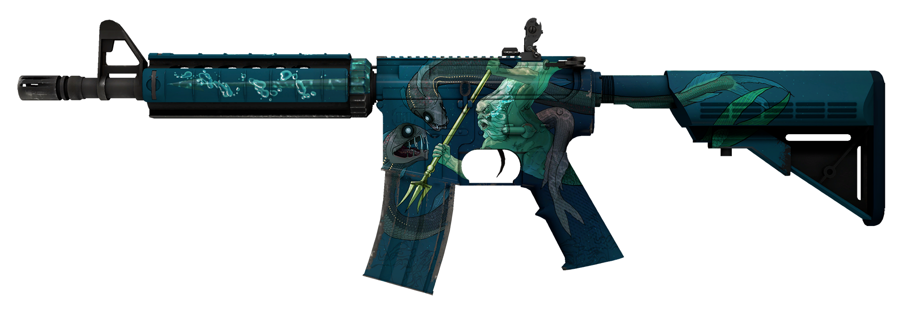

Weap-info

Esta arma foi baseada na arma real "M4 Carabina".
Criada nos EUA entre 1984-1993.
Esta arma é de calibre 5.56 tem 2.95Kg, 83.8 centimetros de comprimento
Damage - 33
Firerate - 11
Recoil Control - 77
Accurate range - 30m
Armor penetration - 140
AK
M4
AWP
DEAGLE
USP-S